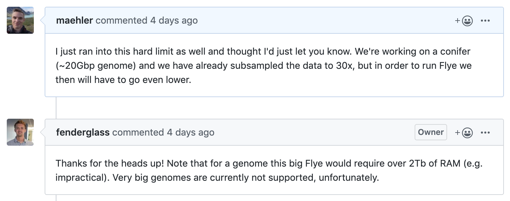

Niklas Mähler
Uppsala 2019-10-08
In our experience: very slow and CPU-hungry
There are however things implemented in order to bring down CPU time and disk space requirements
Dynamically mask repeats as you go
1.4 Gbp assembly…
or watchtower...
or redbean...
Very fast and easy to run
| Assembly | Assembly size | NG50 |
|---|---|---|
| 15x input (v1.x) | 20.9 Gbp | 99.1 kbp |
| 30x input (v2.4) | 19.1 Gbp | 131 kbp |
Seems very easy to run, clear messages
[2019-10-03 14:53:37] INFO: Reading sequences
[2019-10-03 15:50:12] ERROR: Maximum sequence limit reached (549755813888)
[2019-10-03 15:50:13] ERROR: Caught unhandled exception: Input overflowMemory hungry
Currently running on HPC2N in Umeå
Status yesterday at 12:25: 14,700 contigs comprising 3.5 Gbp